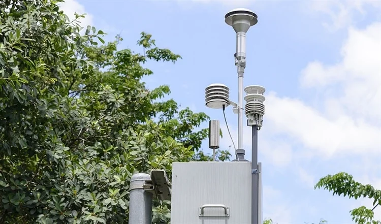
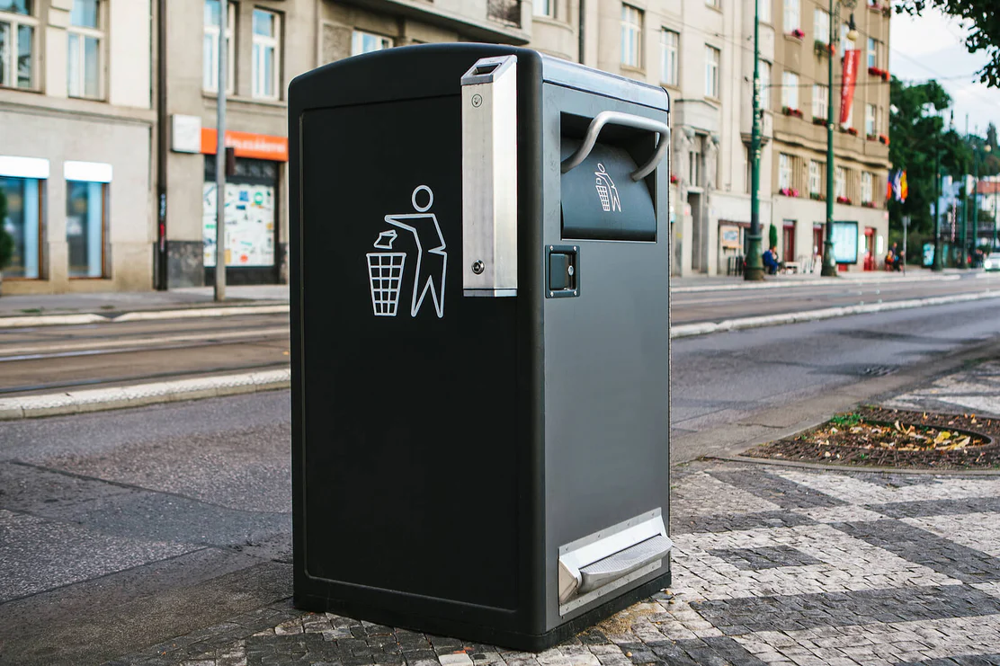
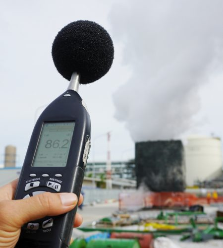

Air Quality Sensor
Air quality sensors track PM2.5 and CO2 levels. Alerts often rise, but people continue daily life as usual.
Smart Waste Bin
Air quality sensors track PM2.5 and CO2 levels. Alerts often rise, but people continue daily life as usual.
Noise Pollution Monitor
Air quality sensors track PM2.5 and CO2 levels. Alerts often rise, but people continue daily life as usual.